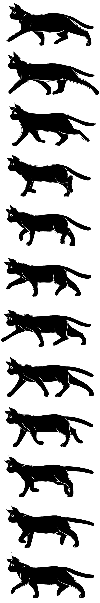

<div class="todo">
    <div id="cat-walking">
        
    </div>
</div>

<style>
    .todo {
        width: auto;
        background-image: url('fondo.jpg'); 
        background-size: cover ;
        background-position: center; 
        background-repeat: no-repeat;
        height: 959px; /* Ajusta la altura para que coincida con el contenedor del gato */
    }

    #cat-walking {
        width: 400px;
        height: 200px;
        overflow: hidden;
        position: absolute;
        bottom: 0;
        animation: cat-walking-move 4s linear infinite;
    }

    @keyframes cat-walking-move {
        0% {
            opacity: 0;
            left: 70%;
        }
        8% {
            opacity: 1;
        }
        95% {
            opacity: 1;
        }
        100% {
            opacity: 0;
            left: 0%;
        }
    }

    #cat-walking>img {
        animation: cat-walking 1.2s steps(12) infinite;
    }

    @keyframes cat-walking {
        from {
            transform: translate(0px, 0)
        }
        to {
            transform: translate(0px, -100%)
        }
    }

    @keyframes cat-movement {
        0% {
            opacity: 0;
            right: 0px;
        }
        5% {
            opacity: 1;
        }
        95% {
            opacity: 1;
        }
        100% {
            opacity: 0;
            right: calc(100% - 400px);
        }
    }
</style>